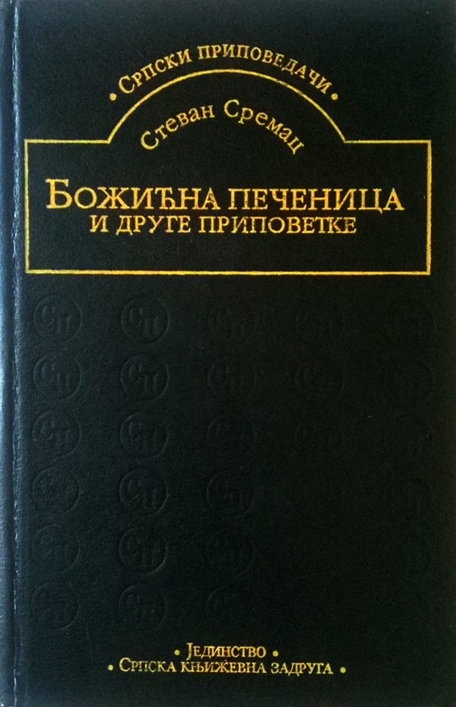

"Božićna pečenica" je pripovetka Stevana Sremca, koja je prvi put objavljena u Glasniku za zabavu i nauku, Beograd 1893, god. I, br. 2 (10. februar).
Ova realistička pripovetka podeljena je u tri glave, a sadrži i humorističke elemente. Prema srpskom književnom kritičaru, Jovanu Deretiću, Stevan Sremac je pored Radoja Domanovića i Branislava Nušića, bio jedan od trojice najvećih majstora smeha u epohi srpskog realizma.
Ovde možete pronaći ceo tekst pripovetke.
Po istoimenoj pripoveci, snimljen je i film koji se naazi na ovoj adresi.
Stevan Sremac (Senta, 11. novembar 1855 — Sokobanja, 12. avgust 1906) bio je srpski pisac epohe realizma i akademik.
Kako su njegovi roditelji preminuli dok je još bio dete, o Stevanu se brinuo njegov ujak, Jovan Đorđević, srpski književnik.>/p>
Stevan Sremac je učestvovao u ratovima 1876-1878. godine. Školovao se i odrastao u Beogradu, a počeo je kasno da se bavi književnošću, u svojim tridesetim godinama.
Pripadao je epohi realizma, a njegova najpoznatija dela su Ivkova slava, Pop Ćira i pop Spira, Zona Zamfirova. Rođen je u Senti, u Bačkoj, 11. novembra 1855. godine, u zanatlijskoj porodici, njegov otac Avram Sremac bio je senćanski krojač skromnog porekla, a majka Ekaterina iz ugledne srpske trgovačke porodice Filipa Ćorđevića, iz istog mesta. Avram Sremac i Ekaterina Đorđević venčali su se u Senti 12. novembra 1853. godine, u pravoslavnom hramu svetog arhangela Mihaila.
Kao pripovedač Sremac se u velikoj meri oslanjao na raniju tradiciju srpske proze, naročito na dela Jakova Ignjatovića. Sa Ignjatovićem ga povezuju mnoge zajedničke crte: konzervativnost i tradicionalizam, idealizacija prošlosti, ljubav prema prostom svetu čiji život najradije prikazuju u svojim delima, humor.
Od stranih pisaca najviše je voleo Servantesa i Gogolja. Sa Gogoljem ga povezuju takođe mnoge zajedničke osobine, naročito u stilu i književnom postupku. Poznavao je i cenio engleski realistički roman 18. i 19. veka: Fildinga, Svifta, Dikensa, Džordža Eliota.
O poznavanju domaće i strane književnosti i načitanosti, Sremac spada u najobrazovanije srpske pisce druge polovine 19. veka.
Priznanja>/p>
Bio je odlikovan sa tri ordena:
Značajnija dela:
Protagonisti pripovetke su Pavle Postiljonović i Jovan Maksić, činovnici.
U prvoj glavi pripovedač retrospektivnim putem upoznaje čitaoca sa junacima. Jova je prikazan kao lukav i prepreden čovek, koji vešto ume da se snađe u svakoj situaciji i stvari uvek preokrene u svoju korist. Rodio se dve godine posle smrti svog oca, zapravo iz nekakve vanbračne veze svoje majke, udovice. Bio je rđav đak, do službe je došao zahvaljujući rodbinskim vezama. Vrlo je lako uspevao da ubedi svakoga da mu pozajmi novac, a sa istom lakoćom uspevao je i da izbegne vraćanje dugova. Stoga su mu oni kojima je dugovao novac nadenuli nadimak Jova Vatra, a oni prema kojima je imao manji dug - Jova Vatrica.
Druga glava počinje slikom atmosfere uoči Božića. Te, 1891. godine bila je jaka zima. Pošavši na pijacu da kupi prase za Božićnu trpezu, Jova susreće svog kolegu Pavla (Paju), koga tom prilikom poziva na Božićni ručak. U drugom delu glave prikazano je veliko praznično spremanje u domu Jove i njegove žene Kaje.
Treća glava predstavlja centralni deo pripovetke. Posle jutarnjeg bogosluženja, Jova i Paja odlaze zajedno u Jovin dom. Jova se hvali kako za spremanje Božićne pečenice nema nigde većeg majstora od njega. Za prazničnom trpezom Jova priča Paji kako je uzeo Kaju bez miraza, ali se ne kaje, jer je njegova žena dobra kućanica. Kaja pomalo koketira sa Pajom. Uz prijatan razgovor malo su i popili i zapevali sve troje. Pokazalo se da je Pajino i Kajino gostoprimstvo bilo lukav način kako da na prevaru iskamče od naivnog Paje potpis za menicu.
Paja se našao u čudu ne mogavši ni na koji način da izbegne prevaru. Humor je na samom kraju pripovetke postignut samoironičnim Pajinim poređenjem sa prasećom pečenicom: "A prika Paja samo ćuti. Ćuti kao da se osramotio pred kumom; ćuti pa pušta guste dimove, i jednako gleda preda se u onu praseću glavu, koja mu licem okrenuta beše i kojoj je Jova uglavio bio među vilice jednu grdnu dunju. Dunja je ispala bila, i praseća glava, onako sa razjapljenim vilicama, kao da je začuđeno blenula u Paju, koji je takođe blenuo u nju. Tako se gledaju njih dvoje, pečenica i opečeni Paja. Šta li je, bože, mislio i premišljao g. Paja gledajući u tu božićnu pečenicu? Ako je ona praseća glava što mislila u taj par, to je i on."
Priredila Tamara Petrović